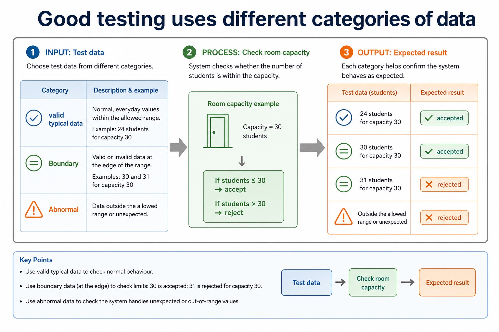

Dry run, walkthrough, white-box, black-box, integration, alpha, beta, acceptance and stub testing
S12.05.A01S12.05.A02S12.05.A03S12.05.A04S12.05.A05S12.05.A06S12.05.A07S12.05.A08S12.05.A09
Visual overview
Good testing uses different categories of data

Visual transcript
- Test data
- Category
- Room capacity example
- Expected result
- valid typical data
- 24 students for capacity 30
- accepted
- Boundary
- valid or invalid data at the edge
- 30 and 31 for capacity 30
- 30 accepted; 31 rejected
- Abnormal
Core explanation
Dry run, walkthrough, white-box, black-box, integration, alpha, beta and acceptance testing, and use of a stub.
Alpha testing is performed internally before release; beta testing uses selected external users in realistic settings; acceptance testing checks the delivered system against agreed requirements. A strategy states levels/methods/responsibility, while a test plan records test ID, purpose, data, expected result, actual result and pass/fail.
Dry run manually traces code; walkthrough is a structured peer review; white-box derives tests from internal paths; black-box derives tests from specifications. Integration tests combined modules, using a stub to imitate an unavailable called module.